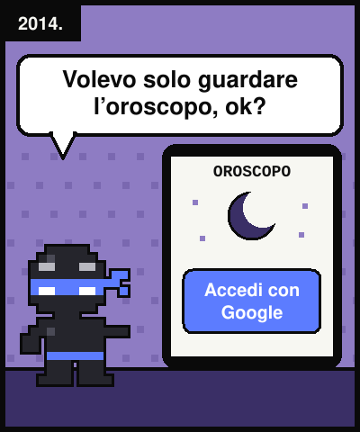
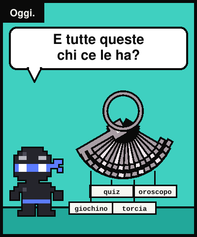
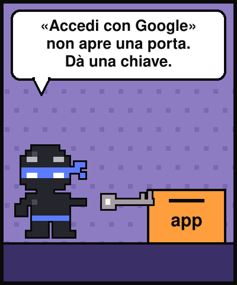
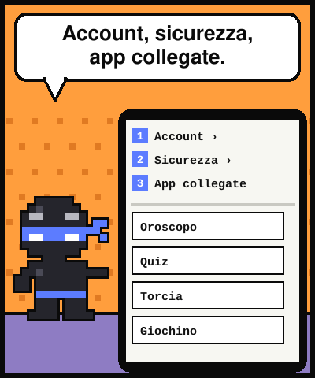
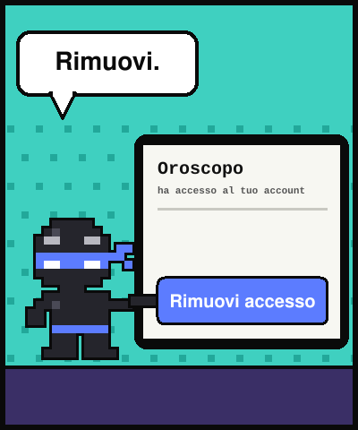
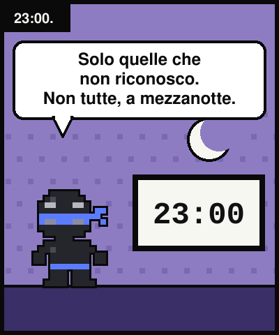
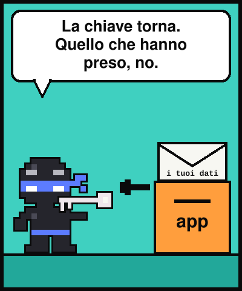
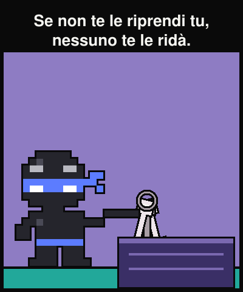

Lezione dal 2077 · n.007
Nel 2014 ho premuto «Accedi con Google» per vedere un oroscopo. Quell'app ce l'ha ancora, la chiave.








Mia nipote ha collegato quattro app al suo account. Apro il mio elenco: trentacinque. Nove non le riconosco.
L'app della palestra ha chiuso nel 2019, ma il permesso di leggere la mia rubrica è ancora lì.
«Accedi con Google» non è un accesso: è una consegna di chiavi. E un permesso non finisce quando te ne vai.
Google scrive che puoi rimuovere i collegamenti in qualsiasi momento. Ma i dati già presi restano suoi: chiudere la porta non svuota le tasche.
«Le chiavi date non tornano da sole. Chi non le chiede indietro, le ha regalate.»